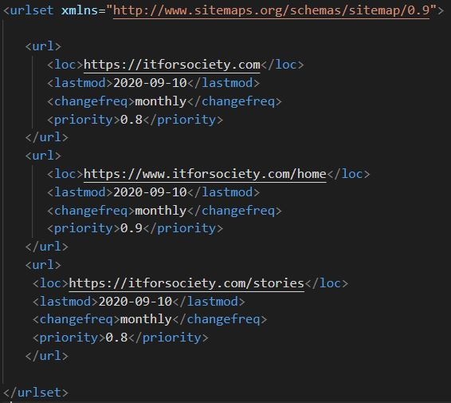
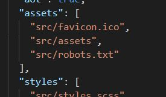
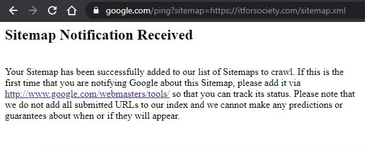
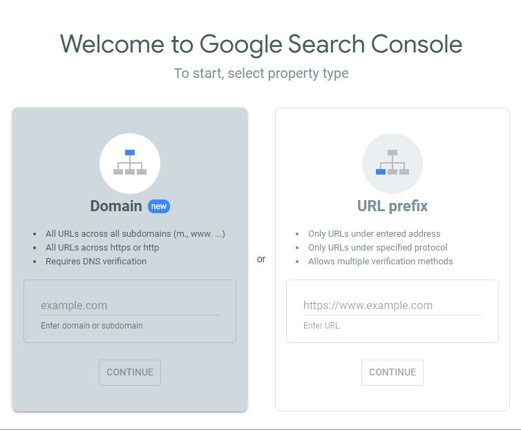
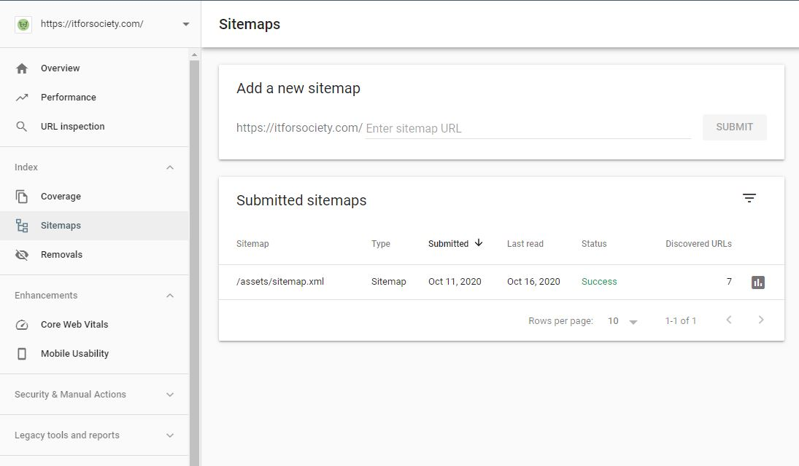

Google searches your website with Web Crawler, also known as spider, bot or spiderbot. When the website is found, it is starting to crawl your page. Google renders the page and analyses both text and non-text content, and overall visual layout to decide where it should appear in Search results.
You can ensure that Crawler gets all of your pages by creating a sitemap and deploying that sitemap on Google Search Console, or just letting the Crawler know sitemap location in robots.txt. When you create a sitemap, you must add it to your public (assets) folder to make it accessible for Web Crawler.

This is a part of our sitemap, you can the full one here, directly on our IT for Society web page.
"robots.txt" is a file where you can communicate with Web Crawlers. You can instruct them on the location of your sitemap, and you can tell them which paths (web pages) they should skip and not look into. When you create robots.txt file you should place it in main/root page of your web source. Web crawler automatically looks for robots.txt file in your root directory. Our robots.txt file has just one line since we only want to tell Web Crawler where is our sitemap and it looks like this:
Sitemap: https://itforsociety.com/assets/sitemap.xml
If you are using angular you need to allow public access to robots.txt file. Just add src/robots.txt line in assets object in angular.json

Now Web Crawler can automatically find your sitemap by checking your robots.txt file.
You can also speed up the process by pinging Google Search directly over the API like this:
http://www.google.com/ping?sitemap=https://itforsociety.com/sitemap.xml

The other option is to upload your sitemap directly by loging in with Google account to Google Search Console.

When you login, you will need to verify your website first. If your website is already verified with your account, Google will automatically verify your page when you use URL Prefix. For domain verification, you will have to go and add authentication string to the site of your domain provider. Sometimes this verification can take around 24 hours.
After site verification you will be able to enter Google Search Console and there you can easily find a place to submit your sitemap path.

This are some of the ways how you can tell Google about your website. Remember that Google is not only one with a Web Crawler, there are many other Web Crawlers like:
But do not worry! If you created your robots.txt file inside of the root folder with the right path to your sitemap.xml, all this Web Crawlers will find it and crawl your website automatically.